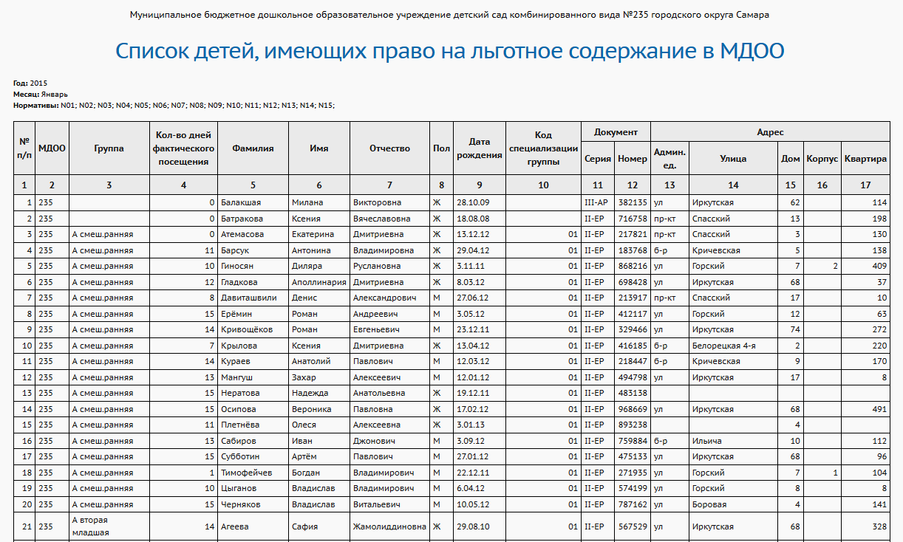
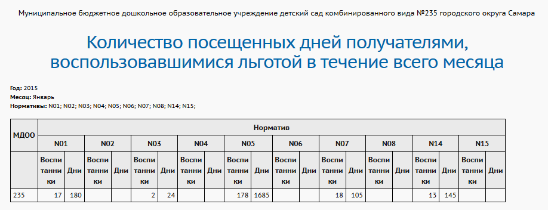

Уровень отчёта: ДОО, УО
Это пофамильный список воспитанников, имеющих льготы согласно указанным нормативам (в фильтрах можно выбрать один или несколько нормативов родительской платы). Замечание: дети могут дублироваться в отчёте, если они в течение месяца посещали детсад по нескольким нормативам.
МДОО – номер ДОО
Группа – название текущей группы, в которой находится ребёнок.
Если ребёнок переводился из группы в группу, то здесь выводится не та группа, в которую он был зачислен в выбранном месяце, а та, в которую он зачислен сейчас.
Если ребёнок в выбранном месяце был зачислен в ДОО, но на момент формирования отчёта ребёнок выбыл из этого ДОО, - то выводится пустое название группы.
Кол-во дней фактического посещения – кол-во дней в данном месяце, посещённых ребёнком (соответствует графе «Посещаемость» в экране «Родительская плата»)
Фамилия, Имя, Отчество, Пол, Дата рождения – соответствующие данные о ребёнке
Код специализации группы – сокращённое обозначение специализации группы по здоровью:
| 01 Без ограничений (I группа здоровья)
|
| 02 туберкулезная интоксикация
|
| 03 ЧБД
|
| 04 нарушение интеллекта (РДА)
|
| 05 умственноотсталые
|
| 06 ЗПР
|
| 07 Заикание
|
| 08 ОНР
|
| 09 ФФН
|
| 10 нарушение с ОДА
|
| 11 ДЦП
|
| 12 нарушение слуха
|
| 13 нарушение зрения
|
| 14 сахарный диабет
|
| 15 ЗРР
|
| 16 аллергопатология
|
| 17 Амблиопия
|
| 18 Косоглазие
|
Документ – Серия и Номер документа, удостоверяющего личность:
| · | если в личной карточке ребёнка заполнено "Свидетельство о рождении РФ" - то выводится это значение,
|
| · | иначе если заполнено "Свидетельство о рождении, выданное уполномоченным органом иностранного государства" - то выводится это значение.
|
Адрес – адрес места жительства ребёнка (в личной карточке ребёнка в блоке «Контактная информация» берётся из поля «Место жительства»).

Отчёт "Количество посещенных дней получателями, воспользовавшимися льготой в течении всего месяца"
Уровень отчёта: ДОО, УО
Это количественный отчёт. В столбцах отчёта перечисляются все нормативы родительской платы, действующие в указанном месяце. По всему детсаду суммируются:
| · | количество воспитанников, которые в течение указанного месяца посещали ДОО по каждому нормативу;
|
| · | общее количество дней, посещённое детьми за указанный месяц по данному нормативу.
|
В данном примере S01, S02, … - это действующие нормативы для выбранного месяца, определённые на уровне Управления образования:
